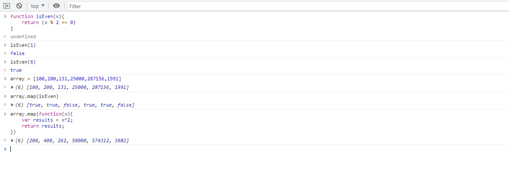

Lab 8 - Anon Functions and Callbacks
Subject of Lab 8
In this lab, we making a JavaScript file that experiencing Anon Functions and callbacks. Using the function to sort the array and calculating squareroot of the variables.
Challenges
I spend some time learning and using .map technique.I was able to figure it out and finish it without further problems. The challenges were I was trying how to print out my result instead of checking in console. I did search how to use innerHTML to print out values in html.
Result
Here is the JavaScript file that I created for lab7:
Here is the code for index.html:
Here is the console page:
Here is the console page showing result: